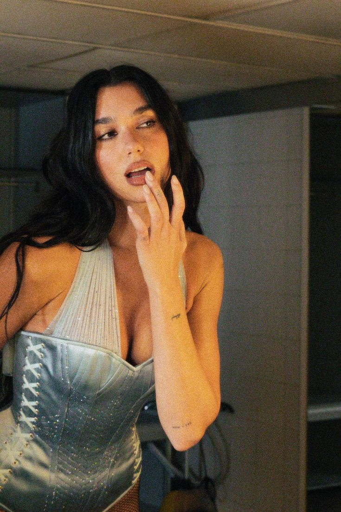
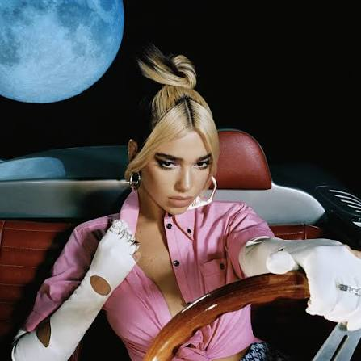
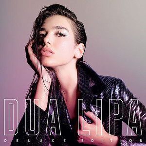
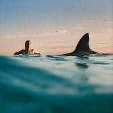
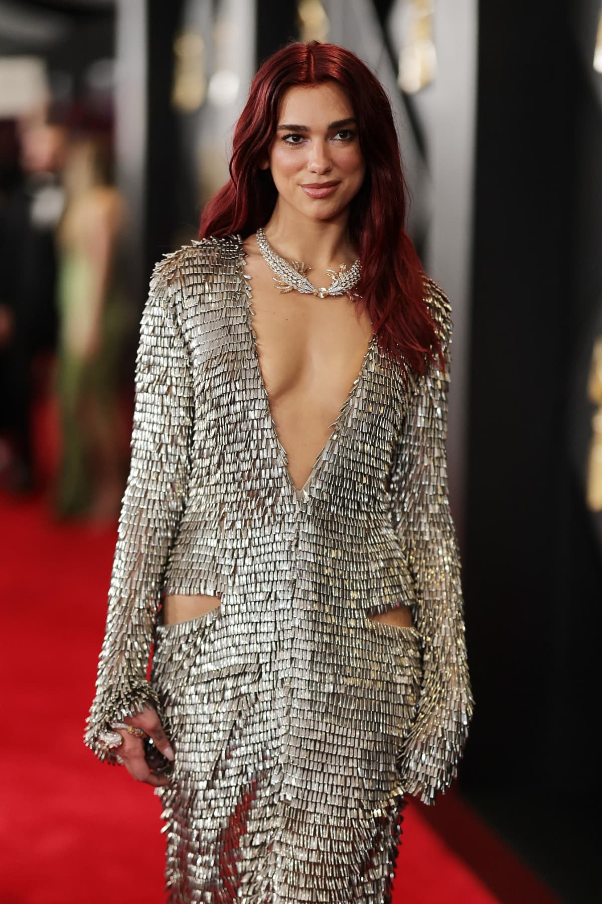
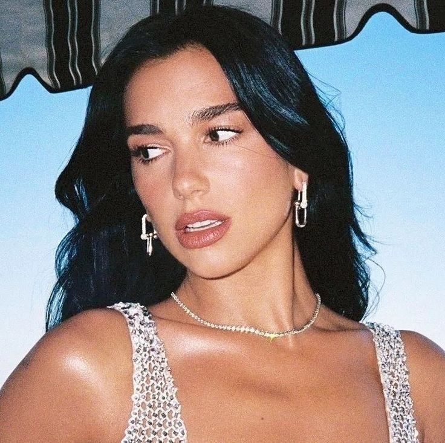
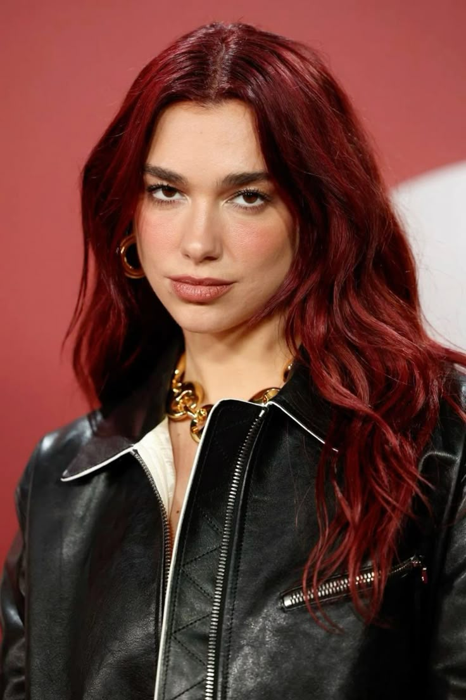
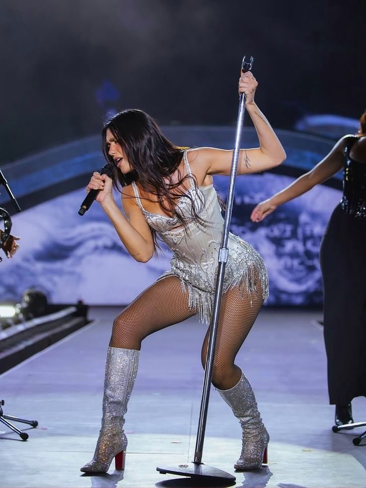

3
Studio Eras Featured
Fan-made 💎 For the love of Dua Lipa
A hot-pink corner of the internet for fans of Dua Lipa - where you can explore her evolution from London newcomer to global pop superstar and disco-pop innovator.

3
Studio Eras Featured
24/7
Fan Club Energy
100%
Dancefloor Approved
∞
Replay Value
From "New Rules" to "Levitating" - explore the hits that defined a generation.
Don't Start Now, Levitating, Hallucinate
Dua Lipa (2017), Future Nostalgia (2020), Radical Optimism (2024)
Grammy Winner, Brit Awards, MTV VMAs
A blend of dance-pop, disco grooves, sleek basslines, and confident vocals that balance emotional lyrics with high-energy production.
Includes major crossover tracks and features with global artists and producers across pop, dance, and electronic music.
New Rules, One Kiss, IDGAF, Physical, Levitating, Houdini, and Training Season remain fan staples.
Dua Lipa's most famous and commercially successful song is "Levitating" (2020), which was named the top Billboard Hot 100 song of 2021 and achieved Diamond certification. It is highly regarded for its record-breaking chart longevity and over 2 billion Spotify streams, with "Don't Start Now" and "New Rules" also ranking among her most iconic hits.
Each chapter has its own color, sound, and fan-memory soundtrack.

2017
Breakout confidence, bold hooks, and the rise of an icon.

2020
Disco-future perfection built for headphones and stadium lights.

On Tour
Choreography, crowd singalongs, and full-power stage storytelling.
Disco-pop perfection and dancefloor anthems

2017
Her debut self-titled album introduced the world to her unique blend of pop, R&B, and dance. Features the breakout hit "New Rules."
2020
The album that brought disco-pop back to the mainstream. Features hits like "Don't Start Now," "Levitating," and "Physical."

2024
Released in 2024, Radical Optimism leans into confident pop with playful energy and emotional honesty. This era includes fan-favorite tracks like "Houdini" and "Training Season," and shows a more fearless, self-assured side of Dua.
Dua Lipa's debut album was built over years of writing, recording, and releasing singles before the full project landed in 2017.
After signing with Warner in 2015, Dua began recording across multiple sessions with different producers and writers. Instead of rushing the album, she developed her sound step-by-step through single releases and fan feedback.
The record blends pop, dance, and R&B influences with darker synth textures. The writing focuses on confidence, boundaries, heartbreak, and self-worth, which became a signature of her early era.
Major songs from this era include "Be the One," "Blow Your Mind (Mwah)," "IDGAF," and especially "New Rules," which became the global breakout that pushed the album to iconic status.
This album established Dua Lipa as a complete pop artist, not just a one-song moment. It laid the foundation for later eras like Future Nostalgia and proved her voice, style, and songwriting identity.
This album was crafted as a modern pop-disco statement: retro inspiration, futuristic production, and relentless hit-making focus.
Dua and her team aimed to make a timeless dance-pop album that felt nostalgic but still forward-looking. The concept mixed late-70s/80s disco energy with punchy modern pop songwriting.
The project was developed through focused writing and production camps, with tight attention on groove, basslines, and hooks that would feel huge both in clubs and on radio.
"Don't Start Now," "Physical," "Levitating," and "Hallucinate" helped define the era. Each track pushed a dancefloor-first identity while keeping strong lyrical storytelling.
Future Nostalgia elevated Dua into top-tier global pop status, became one of the most celebrated pop albums of its era, and influenced a broader return of disco-inspired sounds in mainstream music.
A brighter, emotionally direct chapter shaped around confidence, movement, and staying open-hearted through change.
The album title reflects a core idea: choosing optimism and momentum even when life feels uncertain. This direction gave the era a fresh emotional tone compared to earlier projects.
The production leans into sleek pop textures, rhythmic bounce, and polished vocal layers, balancing high-energy tracks with more reflective songwriting moments.
"Houdini" and "Training Season" led the rollout and set the mood for the era: confident, playful, and emotionally sharp, with a strong performance-first feel.
Radical Optimism shows growth in perspective and storytelling, proving Dua can evolve her sound while keeping the same commanding pop identity that fans connect with.
Born in London to Albanian parents, Dua Lipa moved to Kosovo at age 13, then returned to London at 15 to pursue her music dreams. Working as a waitress while recording demos, she signed with Warner Bros. in 2015.
Before her full debut album arrived, she built momentum through singles like "Be the One" and "Hotter Than Hell," which helped introduce her voice and style to international audiences. By the time "New Rules" exploded in 2017, she had already developed a clear artistic identity rooted in confidence, sharp hooks, and emotionally direct writing.
Her second era, Future Nostalgia, elevated her to another level with a dancefloor-driven sound that blended retro disco influences with modern pop production. Tracks like "Don't Start Now," "Physical," and "Levitating" became global anthems and helped define pop music in the early 2020s.
Beyond music, Dua has expanded her impact through major fashion and beauty partnerships, international touring, and a strong live-performance reputation. Her journey reflects constant growth: each era keeps her core confidence while pushing her sound, visuals, and storytelling into new territory.
Today, she is recognized not just as a hitmaker, but as one of the most influential pop artists of her generation, with a fan base that spans across cultures, countries, and music communities worldwide.
Dua Lipa didn't just follow trends - she created them. Her unique blend of 70s disco with modern pop production created a sound that defined the early 2020s and inspired countless artists to embrace dance-pop again.
Your fan-club news desk for awards highlights, song teaser buzz, and major magazine cover moments.
Awards Watch
Major wins from Dua's award history (selected highlights):
Cover Star
Fashion + beauty brands linked to her cover/editorial era:
Click the slideshow to see the next photo.






1 / 22
Click anywhere on the photo for next